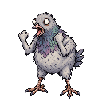
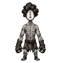
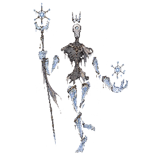

Fire Lizard
名前
ファイヤーリザード → Fire Lizard
本番 → ドラフト
| 役割 | V1 本番版 | V2 ドラフト |
|---|---|---|
| スターター | 3 | 3 |
| コモン | 3 | 3 |
| カーブボール | 3 | 3 |
| レア | 3 | 3 |
| 頂点 | 1 | 1 |
| 合計 | 13 | 13 |
追加された種はありません。
削除された種はありません。
ファイヤーリザード → Fire Lizard

アオガメ → Blue Turtle

グリーンフロッグ → Green Frog

現在の出現マップには接続されていません
普通のネズミ → Normal Rat

現在の出現マップには接続されていません
普通の鳩 → Normal Pidgeon

現在の出現マップには接続されていません
ビリビリマウス → Yellow Mouse

現在の出現マップには接続されていません
薄影 → Faint Shade

現在の出現マップには接続されていません
見習い拳 → Apprentice Fist

現在の出現マップには接続されていません
毒袋 → Poison Pouch

現在の出現マップには接続されていません
岩よろい → Rock Armor

現在の出現マップには接続されていません
土くぐり → Dirt Burrower

現在の出現マップには接続されていません
凍り玉 → Frozen Orb

現在の出現マップには接続されていません
念動コイル → Telekinetic Coil
変更なしの種はありません。